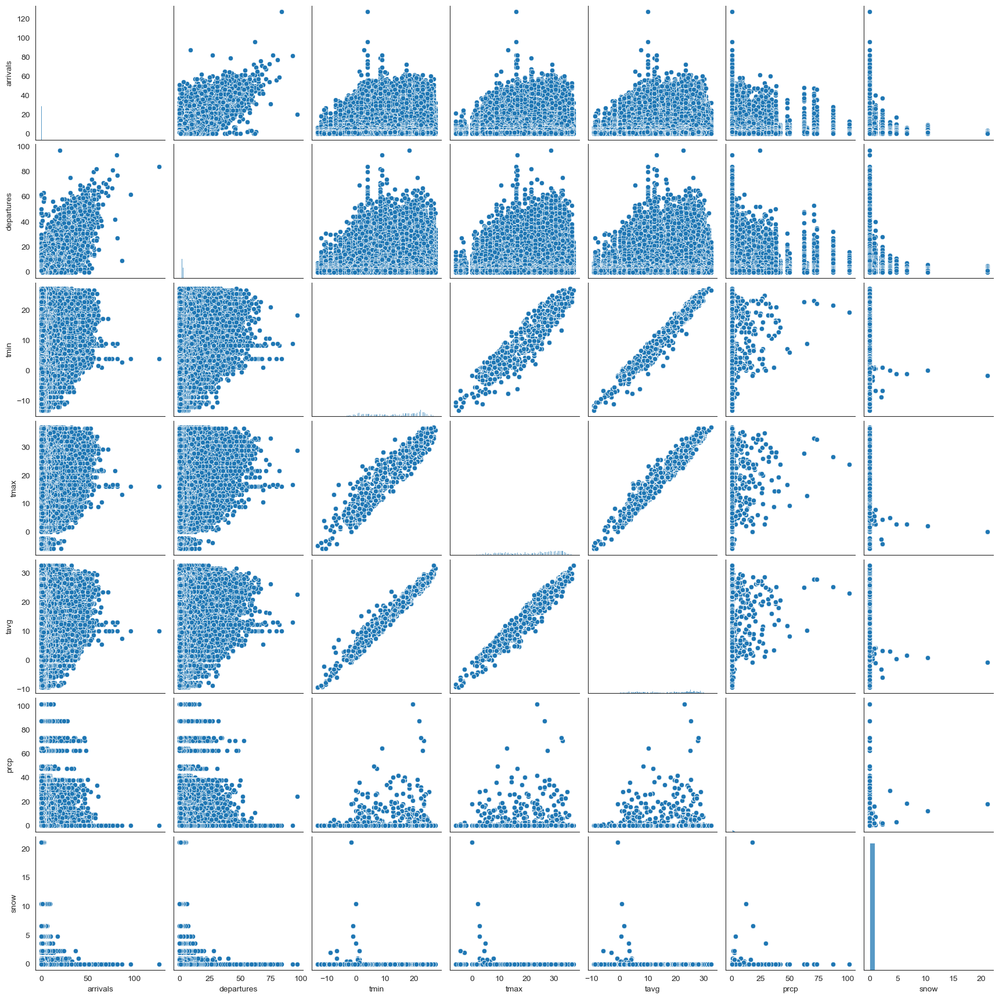

Capitol Bikeshare
This repository contains my code and data used for predicting bike availability in Washington D.C. using the publicly available Capital Bikeshare dataset. This was originally a project for my Master's program that I then completed on my own time and increasing the scale of the project. The final presentation can be found here.
Data collection
The processing notebook details the code that was used to collect the data from publicly available sources
Exploration
The exploration notebook shows the steps I took to explore the data and some written analysis about the decisions made based on this exploration.
Activity
Over time


Geographically
arrivals

departures

Modeling
Based on the results of the exploration, I tested and evaluated multiple machine learning models using predictive modeling best practices including train-test splits, hyperparameter tuning, and cross-validation. The results of the modeling can be found here.
Variable Relationships


XGBoost Modeling Results